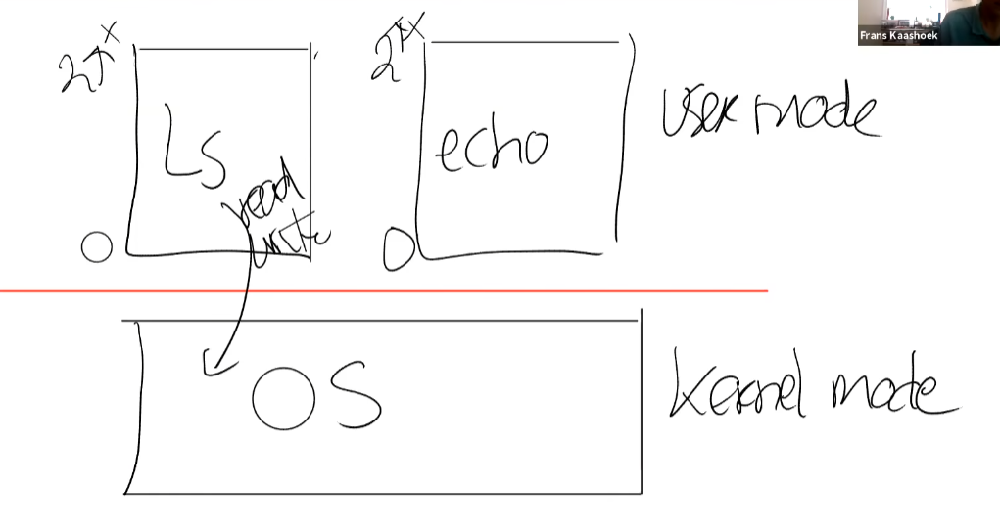
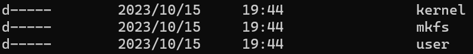
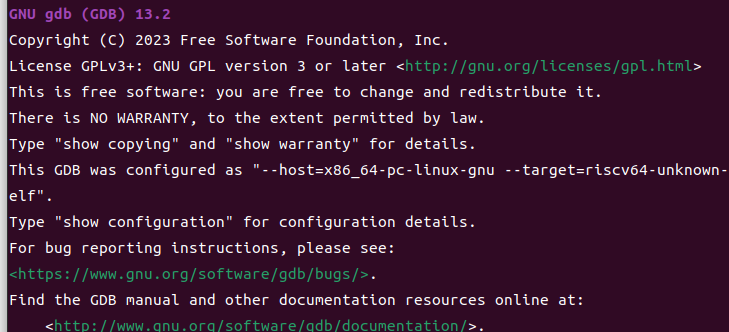
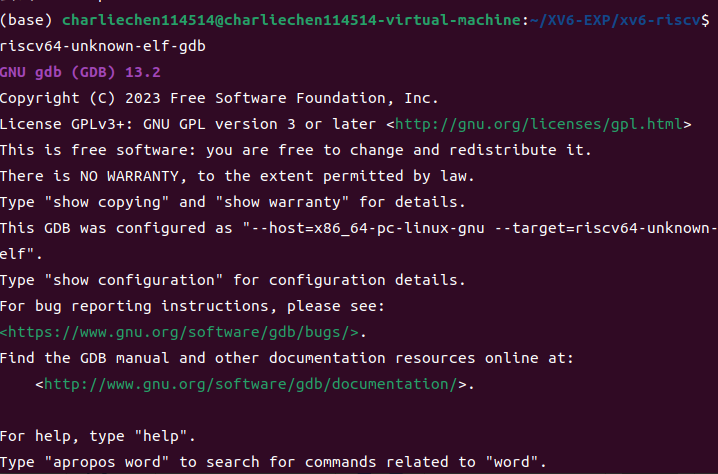
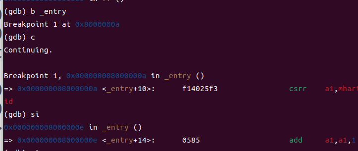
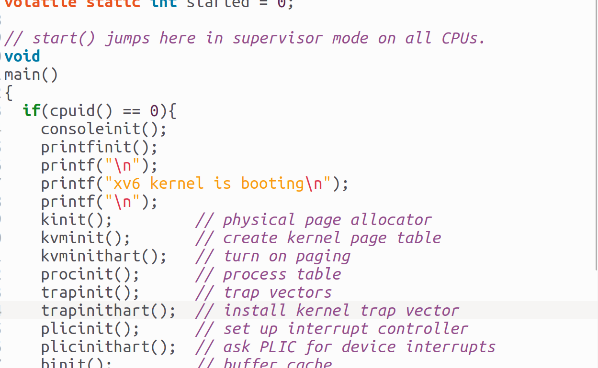
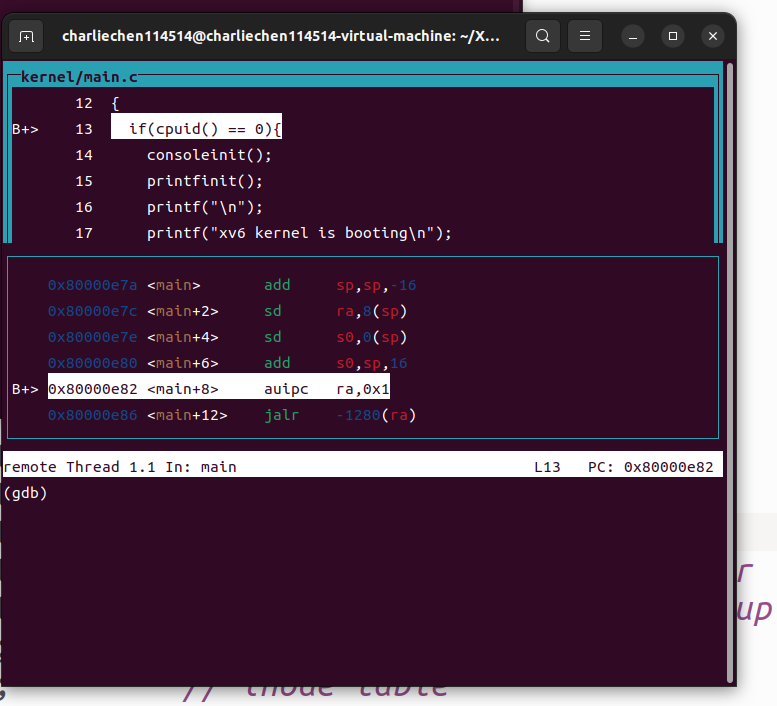

MIT6S081-Online-course 3
MIT6S081 3
现在，我们开始更多的讨论操作系统更加具体的特性
ISOLATION:隔离性
操作系统必须给每一个进程提供一个较为独立的环境。换而言之，就是相互之间不要相互影响。我们求解质数的程序不要去影响其他程序，操作系统应该可以正确的处理应用程序和应用程序之间，应用程序和系统程序之间的区别。
我们想一下：假使我们的CPU不支持系统层面的并发。那么，我们可能就会发现电脑变得很笨——他没办法同时运行多个程序。万一有一个程序，无意或者是有意的占据CPU很久，那么，电脑就会瘫痪。
操作系统有义务，在——无论是怎样的应用程序，都必须周期性的，强迫的扔下占为己有的CPU，然后切换到别的程序运行。这样，在高频率的CPU工作下，我们就会看到貌似所有的程序都在同时运行。
在空间上，如果我们不对之做虚拟的映射（操作系统预先的排布），可能就会出现两个程序互相侵占对方空间的情况——电脑开着开着就挂了！
UNIX提供了硬件的抽象。方法是我们只需要使用这些接口即可。让我们可以实现一种强隔离。我们的软件使用的是被抽象的CPU来完成工作。这样，操作系统实现了硬件复用功能。
Q&&A：我们的进程是不是实际上分用CPU，即：一个进程用CPU的一个部分，另一个进程使用另一部分。或者是对于多核系统则是使用不同的核？
是的，当我们运行大于核数量的进程时，则会在时间上分配时间片，换而言之，一个进程只能运行某个时间长度就会被停止换上另一个，随后在切换回来。好像他们在同时运行那样。
应用程序的进程是由text, global data等部分组成，他们共同访问抽象的内存，而不是直接访问物理的内存。操作系统提供了转换。
文件则是对磁盘块的抽象，正如同我们只能操作文件，而不是直接操纵磁盘空间。操作系统维护映射关系。防止磁盘块和磁盘块之间发生冲突，保证两者相互不干扰。
Q&&A：是否会有一个更复杂的内核试着重新调度同一个核的进程以减少缓存缺失
是的，存在缓存亲和性这个东西，操作系统尝试避免缓存缺失或者类似的事情来优化性能。
Q&&A：xv6中哪里可以查阅操作系统复用进程
proc.c文件。但是那是之后会详细展开。那是最接近的
操作系统必须具有防御性质的功能，换而言之，防止恶意程序毁坏系统并处理之，应用程序不应该打破隔离，而是在划定的范围内运作。
一个重要的假设就是：所有的应用程序都是有恶意的，这样就可以迫使我们设计的安全。
实现强隔离的方式之一就是硬件支持：这里有两种方法：
- 用户内核模式，也就是kernel模式。当然在RISC-V这又叫管理者模式，一回事情。
- 另一种是页表，虚拟内存
所有目前的处理器都支持这样的两个方式。
Kernel mode 内核模式
处理器支持两种模式：用户模式和内核模式。当处在内核模式的时候，CPU可以执行特权指令和非特权指令。而在用户模式则指可以执行非特权指令。
非特权指令包括add, sub ,mul等运算指令，或者是跳转流（jmp），或者是常见的分支结构等等。
特权指令则是引入直接硬件操作，包括直接配置页表寄存器，禁止时钟中断等跟硬件密切相关的指令。当用户想要直接运行特权指令，处理器不会执行。除非向操作系统申请并且同意。
Q&&A：如何判断当下的处理器处于的是内核模式还是用户模式?
存在硬件支持! 处理器有一个Flag寄存器,其中有一位标志位记录之:用户模式是1,内核模式是0(一般而言).所以当处理器解码指令的时候就会检查操作码.当发现此位是1而却要执行特权指令,就会发出拒绝的信号.
当然RISC-V还有第三种:机器模式,但是这里先不展开
Q&&A 用户可以直接绕过操作系统嘛?
额,一般不能.
Q&&A BIOS呢?
答案是,计算机执行的第一段代码就是跟BIOS相关的,他指引着操作系统的位置.一般而言,这段代码被写入专门的BIOS芯片,作只读处理(ROM), 所以一般认为是没有恶意的!
Q&&A：那既然设置为特权位这个指令就是一个特权指令,用户程序如何满足自己需要特权指令的需求呢?
中断:换而言之,交给操作系统判断是否可以执行,随后才会允许程序”内陷”到内核态工作.
Page Table页表
页表的工作就是将虚拟内存映射到真实的物理内存.其基本思想就是给每一个进程提供自己的页表,使用这个方式,进程只能访问它的页表显示的物理内存,这样只要设置页表的映射的物理内存相互不相交即可防止一个进程干涉另一个进程的物理内存.这样就提供了一个强隔离的物理内存布局.

这里有一个进入内核方法:对于RISC-V,就是ecall指令
ecall <n> 这就是应用程序想要访问的系统调用的编号.进入内核的一个由内核控制的特动区域.如:调用fork,我们没有直接使用内核的fork,而是使用的系统调用编号, 如syscall,传递给a0,再去调用内核的fork.
Q&&A 内核在哪里决定程序可以调用特定的内核系统调用呢?
在内核侧, 我们的内核去检查是不是应用程序该工作的地方等等.
Q&&A 操作系统如何从程序那里夺回控制权
存在一个定时器,到点回收,然后分配给其他进程
Q&&A 为啥用C实现操作系统
人话: C语言容易控制硬件,很方便的语言.
TCB（trust computing base）可信任编程基础
必须正确，不能有bug，我们就是这样认为内核。内核必须假设应用程序是有恶意的，这样的思维就是安全思维。
内核根据代码量和管理的事情的多少分为宏内核和微内核。宏内核具有大量的代码，出现严重的bug的可能比较大。好的地方就是在于存在实现不同的子模块可以紧密联系带来很高的性能。比如说Linux。微内核则是可能的减少内核代码。总言之就是让bug总是在操作系统之外，但是性能会比较差，原因就是系统调用次数增加（如文件系统会频繁的调用内核）。
xv6是宏内核。下面简单说一下xv6文件构成。
结合上面所说的，我们的代码分为内核代码，用户代码：

kernel下面有这样的一些文件：
Mode LastWriteTime Length Name
---- ------------- ------ ----
-a---- 2023/10/15 19:44 3478 bio.c
-a---- 2023/10/15 19:44 263 buf.h
-a---- 2023/10/15 19:44 3991 console.c
-a---- 2023/10/15 19:44 6315 defs.h
-a---- 2023/10/15 19:44 819 elf.h
-a---- 2023/10/15 19:44 624 entry.S
-a---- 2023/10/15 19:44 4089 exec.c
-a---- 2023/10/15 19:44 125 fcntl.h
-a---- 2023/10/15 19:44 3791 file.c
-a---- 2023/10/15 19:44 1039 file.h
-a---- 2023/10/15 19:44 17008 fs.c
-a---- 2023/10/15 19:44 1872 fs.h
-a---- 2023/10/15 19:44 1737 kalloc.c
-a---- 2023/10/15 19:44 908 kernel.ld
-a---- 2023/10/15 19:44 3087 kernelvec.S
-a---- 2023/10/15 19:44 5956 log.c
-a---- 2023/10/15 19:44 1277 main.c
-a---- 2023/10/15 19:44 2260 memlayout.h
-a---- 2023/10/15 19:44 764 param.h
-a---- 2023/10/15 19:44 2725 pipe.c
-a---- 2023/10/15 19:44 955 plic.c
-a---- 2023/10/15 19:44 2305 printf.c
-a---- 2023/10/15 19:44 15076 proc.c
-a---- 2023/10/15 19:44 3589 proc.h
-a---- 2023/10/15 19:44 988 ramdisk.c
-a---- 2023/10/15 19:44 7252 riscv.h
-a---- 2023/10/15 19:44 852 sleeplock.c
-a---- 2023/10/15 19:44 275 sleeplock.h
-a---- 2023/10/15 19:44 2747 spinlock.c
-a---- 2023/10/15 19:44 208 spinlock.h
-a---- 2023/10/15 19:44 2473 start.c
-a---- 2023/10/15 19:44 314 stat.h
-a---- 2023/10/15 19:44 1519 string.c
-a---- 2023/10/15 19:44 836 swtch.S
-a---- 2023/10/15 19:44 3616 syscall.c
-a---- 2023/10/15 19:44 507 syscall.h
-a---- 2023/10/15 19:44 8993 sysfile.c
-a---- 2023/10/15 19:44 1198 sysproc.c
-a---- 2023/10/15 19:44 3990 trampoline.S
-a---- 2023/10/15 19:44 5576 trap.c
-a---- 2023/10/15 19:44 244 types.h
-a---- 2023/10/15 19:44 4876 uart.c
-a---- 2023/10/15 19:44 3582 virtio.h
-a---- 2023/10/15 19:44 8991 virtio_disk.c
-a---- 2023/10/15 19:44 10707 vm.c 用户代码如下
Mode LastWriteTime Length Name
---- ------------- ------ ----
-a---- 2023/10/15 19:44 659 cat.c
-a---- 2023/10/15 19:44 315 echo.c
-a---- 2023/10/15 19:44 808 forktest.c
-a---- 2023/10/15 19:44 2130 grep.c
-a---- 2023/10/15 19:44 8128 grind.c
-a---- 2023/10/15 19:44 1158 init.c
-a---- 2023/10/15 19:44 441 initcode.S
-a---- 2023/10/15 19:44 271 kill.c
-a---- 2023/10/15 19:44 302 ln.c
-a---- 2023/10/15 19:44 1646 ls.c
-a---- 2023/10/15 19:44 373 mkdir.c
-a---- 2023/10/15 19:44 2113 printf.c
-a---- 2023/10/15 19:44 368 rm.c
-a---- 2023/10/15 19:44 8830 sh.c
-a---- 2023/10/15 19:44 1103 stressfs.c
-a---- 2023/10/15 19:44 2017 ulib.c
-a---- 2023/10/15 19:44 1768 umalloc.c
-a---- 2023/10/15 19:44 1072 user.h
-a---- 2023/10/15 19:44 632 user.ld
-a---- 2023/10/15 19:44 64992 usertests.c
-a---- 2023/10/15 19:44 688 usys.pl
-a---- 2023/10/15 19:44 888 wc.c
-a---- 2023/10/15 19:44 248 zombie.c 至于mkfs就是make file system的意思，我们每次编译运行的时候都会生成一个空的镜像文件系统文件
Mode LastWriteTime Length Name
---- ------------- ------ ----
-a---- 2023/10/15 19:44 6610 mkfs.c 编译是这样的：proc.c被GCC编译成proc.S在被汇编器编译成二进制文件。其他同理
QEMU是如何模拟RISC-V的呢？答案是，使用C模拟，使用
for(;;){
read_instructions;
decode_instructions;
execute_instructions;
} 就是这样。模拟一切特权和非特权指令。
我们下面尝试一下使用gdb调试，我们后面会通过这样的方式来查阅运行时发生了什么。
我们这里使用的是通用的riscv64-unknown-elf-gdb，这里给出安装方式
sudo apt-get install libncurses5-dev python2 python2-dev texinfo libreadline-dev
# 从清华大学开源镜像站下载gdb源码(约23MB)
wget https://mirrors.tuna.tsinghua.edu.cn/gnu/gdb/gdb-13.1.tar.xz
# 解压gdb源码压缩包
tar -xvf gdb-13.1.tar.xz
# 进入gdb源码目录
cd gdb-13.1
mkdir build && cd build
# 配置编译选项，这里只编译riscv64-unknown-elf一个目标文件
../configure --prefix=/usr/local --target=riscv64-unknown-elf --enable-tui=yes
# 在上面一行编译配置选项中，很多其他的文章会配置一个python选项
# 但我在尝试中发现配置了python选项后后面的编译过程会报错，不添加python选项则没有问题
# 开始编译，这里编译可能消耗较长时间，具体时长取决于机器性能
make -j$(nproc)
# 编译完成后进行安装
sudo make install# 测试一下是否安装成功
riscv64-unknown-elf-gdb -v
对了，这里需要：
To enable execution of this file add
add-auto-load-safe-path /home/charliechen114514/.config/gdb/.gdbinit
line to your configuration file "/home/charliechen114514/.config/gdb/gdbinit". 这样的输出，注意，这里结合自己的位置和文件添加对应的add-auto-load-safe-path。
下面，就可以开始调试了：在我们的xv6源码顶层目录，也就是我们先前输入make qemu的那一层目录下，这次我们输入
make CPUS=1 qemu-gdb 新开一个终端，我们可以直接在同级目录下：
riscv64-unknown-elf-gdb
然后你会发现，gdb就会等待你的输入，我们为了研究程序如何进入enrty，打一个断点
源汇编程序：
0000000080000000 <_entry>:
80000000: 00009117 auipc sp,0x9
80000004: 89013103 ld sp,-1904(sp) # 80008890 <_GLOBAL_OFFSET_TABLE_+0x8>
80000008: 6505 lui a0,0x1
8000000a: f14025f3 csrr a1,mhartid
8000000e: 0585 addi a1,a1,1
80000010: 02b50533 mul a0,a0,a1
80000014: 912a add sp,sp,a0
80000016: 078000ef jal ra,8000008e <start> 打上：
b _entry
断点成功，输入c就会运行到_entry上，si表示的是执行下一条指令。
我们的机器现在在机器模式，马上他就会在内核模式，打一个断点在main那里：
b main
我们的机器就会停在这里

输入layout split获得上面那样的界面，输入n来让自己一步走一个C语言代码
consoleinit();
printfinit();
printf("\n");
printf("xv6 kernel is booting\n");
printf("\n");
kinit(); // physical page allocator
kvminit(); // create kernel page table
kvminithart(); // turn on paging
procinit(); // process table
trapinit(); // trap vectors
trapinithart(); // install kernel trap vector
plicinit(); // set up interrupt controller
plicinithart(); // ask PLIC for device interrupts
binit(); // buffer cache
iinit(); // inode table
fileinit(); // file table
virtio_disk_init(); // emulated hard disk
userinit(); // first user process
__sync_synchronize();
started = 1; 然后就开始我们的第一个进程了。